Home / MLF / Week 8 / Real questions
MLF week 8 - real exam questions
13 questions pulled from past papers whose wording matches this week's topics, newest first, duplicates removed. Pick your answers, then press Check answers. Figures and answer keys are the originals.
Elapsed 00:00
Consider the function  Which of the following is true?
Which of the following is true?
Which of the following is true? is convex on
is convex on  .
.- is concave on .
- is convex for
 and concave for
and concave for  .
. - is neither convex nor concave on any interval.
Consider two functions  and
and  given by:
given by:  Which of the following is true?
Which of the following is true?
and given by: Which of the following is true?- Both
 and
and  are convex
are convex - Only is convex
- Only is convex
- Neither nor is convex
Which of the following is/are true?
- A set
 is convex if and only if convex-hull
is convex if and only if convex-hull  .
. - If is a non-empty convex set in
 with a finite number of elements, then has exactly one element.
with a finite number of elements, then has exactly one element. - If
 is a convex function, then is differentiable.
is a convex function, then is differentiable. - If
 is a function, then the epigraph of is a subset of
is a function, then the epigraph of is a subset of  .
.
Which of the following options is/are correct 
- Set of all global minima of a convex function forms a convex set.
- Gradient descent algorithm is useful in constrained optimization problem.
- Union of two convex sets will result in a convex set always.
- A function cannot be a convex function if its domain is not a convex set.
Let the composition of two functions  and
and  be
be  . Select all statements that are true in a small neighborhood around
. Select all statements that are true in a small neighborhood around  .
.
and be . Select all statements that are true in a small neighborhood around . is a convex function.
is a convex function.- is a concave function.
- is a non-decreasing function.
- is a decreasing function.
Consider the function  convex
convex 
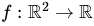
defined as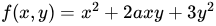
. For what values of is convex 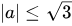
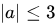
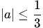
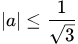
Consider the convex hull of the set of points
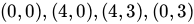
. Which of the following points belongs to the convex hull?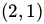
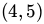
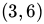
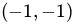
Comprehension passage for this question

Which of the following options is/are true ?
- S is a convex set.
- The objective function of the Primal optimization problem from the previousquestion number no 9 is a convex function.
- The objective function of the Primal optimization problem from the previousquestion number no 9 is a concave function.
- None of these
Which of the following statements about convex sets are true?


Which of the following statements regarding gradient descent is/are correct?
- If the step size is chosen as 1, we may “not always” arrive as close to theoptimal solution even after many number of iterations.
- Solution obtained for optimization problem is the local minimum of itsobjective function.
- Solution obtained for optimization problem is the global minimum of itsobjective function.
- Gradient descent converges to the global optimum in the case of convexfunctions.
- Gradient descent does not converge to the global optimum in the case ofconvex functions.
Which among the following is a convex function?


- It is Convex function.
- Its Hessian matrix is indefinite.
- (0, 0) is a local minima of this function.
- (0, 0) is a local maxima of this function.
Which of the following is not true about the function f(x) = x2 + y2 + 2xy ?
- It is Convex function.
- Its Hessian matrix is indefinite.
- (0, 0) is a local minima of this function.
- (0, 0) is a local maxima of this function.